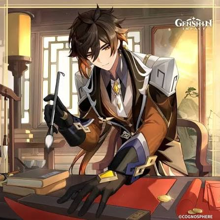
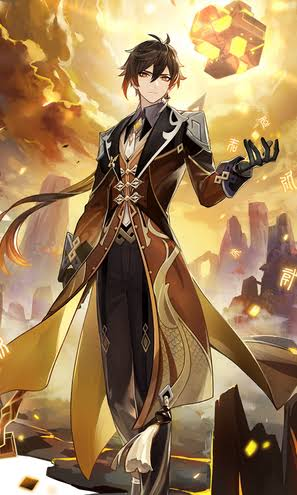

Zhongli é pobre e faliu por não ter mais o controle do Banco de Liyue.

MITO. Como o antigo Arconte Geo (Rex Lapis), ele criava toda a Mora do mundo. Ao virar mortal, ele simplesmente esquece de levar a carteira por falta de costume.